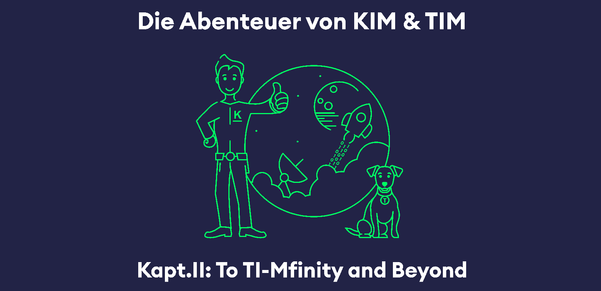
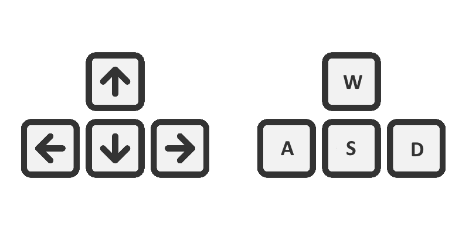
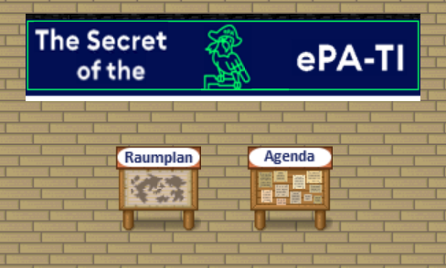
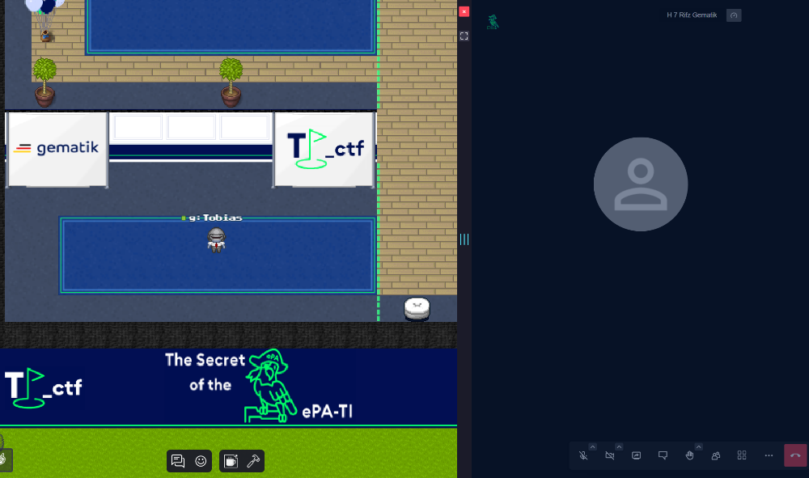
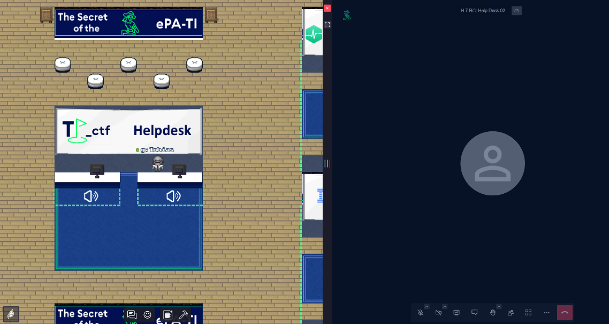
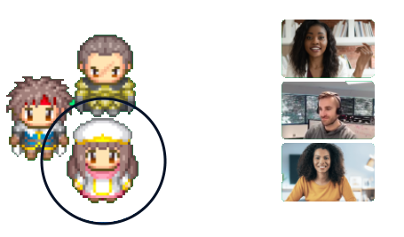
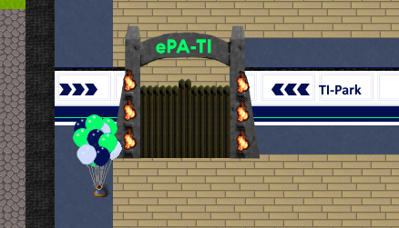
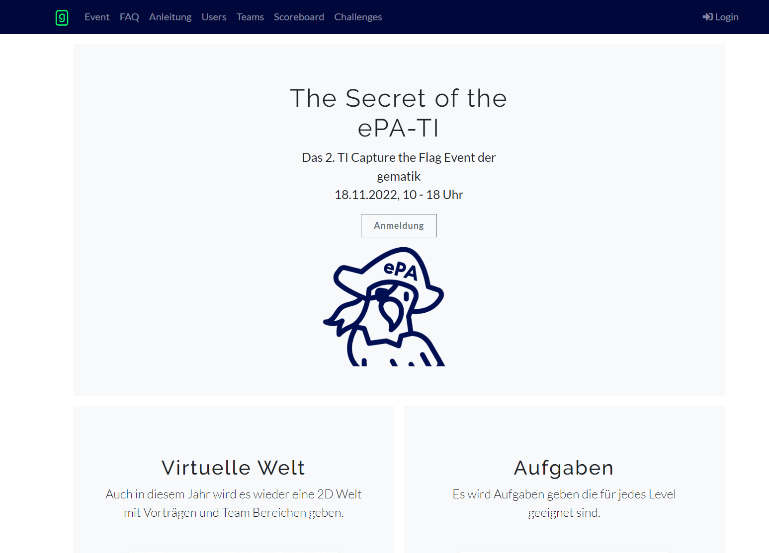

|  |
Wilkommen
Wir freuen uns, Euch auf unserer Event Map zum Capture The Flag Event begrüßen zu dürfen.
Um Euch den Einstieg in die virtuelle Welt zu erleichtern, haben wir hier für Euch die grundlegenden Informationen bereitgestellt.
Steuerung
Wie in einem Computerspiel, könnt Ihr Euch mit der Tastatur frei auf der Map bewegen.
|  |
Ihr könnt auch mit der rechten Maustause auf einen Punkt in der Karte klicken, um Euren Charakter dort hin zu steuern.

|
Raumplan und Agenda
Im Empfangsbereich findet Ihr den Raumplan sowie die Agenda zum heutigen Event. Bitte verpasst nicht die Begrüßung an der Bühne, welche um 09:45h angesetzt ist...
|  |
Kommunikation
In bestimmten Bereichen der Karte wird eine Kommunikationsplattform im Browser eingeblendet, welche zum vortragen von Präsentationen, zur Hilfestellung als auch zum Austausch mit der gematik und unseren Partnern, bereitgestellt wird.

|
 |
|  |
Kommunikation auf der Team Map
Wir haben für Euch Team Räume bereitgestellt, welche Ihr jeweils hinter Eurer zugewiesenen Tür im oberen Bereich der Map erreichen könnt. Dort erwartet Euch eine spannende Storyline zum Event, in welcher Ihr "The Secret of the ePA-TI" lösen müsst.
Sobald Ihr in die nähe eines Teammitglieds tretet, wird eine Kommunikationsinstanz zwischen Euch erstellt und als iFrame im Browser angezeigt.
|  |
Zugang zum Ti-Park und Euren Team Räumen
Das Tor zum TI-Park, auf welchem sich Eure jeweils zugewiesene Team Tür befindet, wird gegen 10:00h eröffnet und mit der Begrüßung an der Bühne freigegeben. Bitte begebt Euch mit Hilfe der Türen zu Eurem zugewiesenen Team Raum um die Storyline spielen zu können.
|  |
CTFd Plattform
Das Event wird auf zwei Ebenen stattfinden, sobald Ihr die Storyline gelöst habt, werden auf der CTFd Plattform weitere Aufgaben freigeschaltet. In der Storyline schaltet Ihr die Flag für die CTFd Aufgabe "To TI-Mfinity and Beyond" frei.
|  |
noch Fragen?
Unser Team steht Euch während des Events zur Verfügung, wir freuen uns auf Euren Besuch beim Helpdesk.